树是什么
生活中的树
- 树的特点
- 树通常有一个根. 连接着根的是树干
- 树干到上面之后会进行分叉成树枝, 树枝还会分叉成更小的树枝
- 在树枝的最后是叶子
模拟树结构
- 公司组织架构
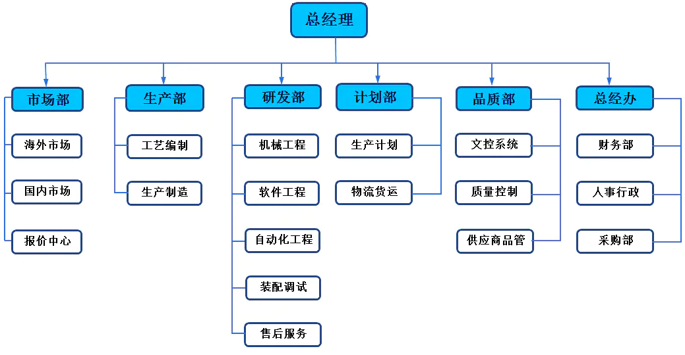
- 我们再将里面的数据移除, 仅仅抽象出来结构, 就是树结构
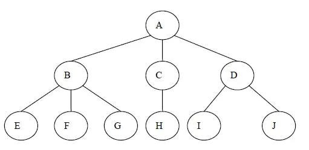
树的优点
- 数组:
- 优点:
- 数组的主要优点是根据下标值访问效率会很高.
- 缺点:
- 需要先对数组进行排序, 生成有序数组, 才能提高查找效率.
- 数组在插入和删除数据时, 需要有大量的位移操作(插入到首位或者中间位置的时候), 效率很低.
- 优点:
- 链表:
- 优点:
- 链表的插入和删除操作效率都很高.
- 缺点:
- 查找效率很低, 需要从头开始依次访问链表中的每个数据项, 直到找到.
- 即使插入和删除操作效率很高, 但是如果要插入和删除中间位置的数据, 还是需要重头先找到对应的数据.
哈希表:
- 优点:
- 哈希表的插入/查询/删除效率都是非常高的
- 缺点:
- 空间利用率不高, 底层使用的是数组, 并且某些单元是没有被利用的.
- 哈希表中的元素是无序的, 不能按照固定的顺序来遍历哈希表中的元素.
- 不能快速的找出哈希表中的最大值或者最小值这些特殊的值.
树结构:
- 不能说树结构比其他结构都要好, 因为每种数据结构都有自己特定的应用场景.
- 树综合了上面的数据结构的优点(当然优点不足于盖过其他数据结构, 比如效率一般情况下没有哈希表高), 并且也弥补了上面数据结构的缺点.
- 而且为了模拟某些场景, 我们使用树结构会更加方便. 比如文件的目录结构.
- 优点:
树的术语
- 树
- 当n=0时，称为空树
- 一棵N个结点的树有N-1条边(除了根节点以外，其他每个节点都有指向父节点的边)
- 除了根结点外，每个结点有且仅有一个父结点
- 结点的度
- 结点拥有子结点的数量（有几个孩子）
- 树的度
- 树中各结点度的最大值.
- 叶结点
- 度为0的结点. (也称为叶子结点)
- 父结点
- 有子树的结点是其子树的根结点的父结点
- 子结点
- 若A结点是B结点的父结点，则称B结点是A结点的子结点；子结点也称孩子结点。
- 兄弟结点
- 具有同一父结点的各结点彼此是兄弟结点。
- 路径和路径长度
- 从一个节点到另一个节点需要经过的节点叫路径，从一个节点到另一个节点的边数叫路径长度
- 结点的层次
- 规定根结点在1层，其它任一结点的层数是其父结点的层数加1。
- 树的深度
- 树中所有结点中的最大层次是这棵树的深度。
树的表示
- 普通的表示方式
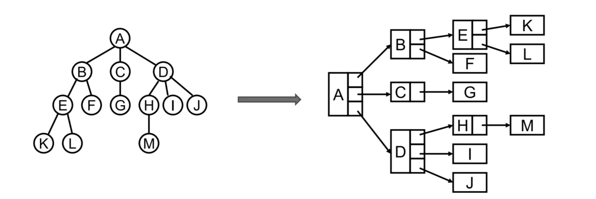
- 儿子-兄弟表示法
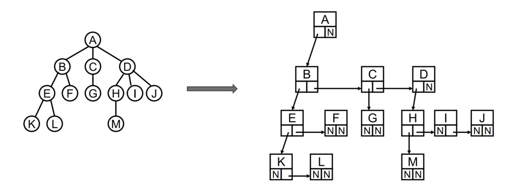
- 儿子-兄弟表示法旋转
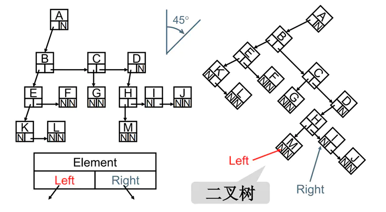
- 其实所有的树本质上都可以使用二叉树模拟出来
二叉树
如果树中每个节点最多只能有两个子节点, 这样的树就成为”二叉树”.
二叉树的概念
- 二叉树的定义
- 二叉树可以为空, 也就是没有结点
- 若不为空，则它是由根结点和称为其左子树TL和右子树TR的两个不相交的二叉树组成
- 二叉树有五种形态
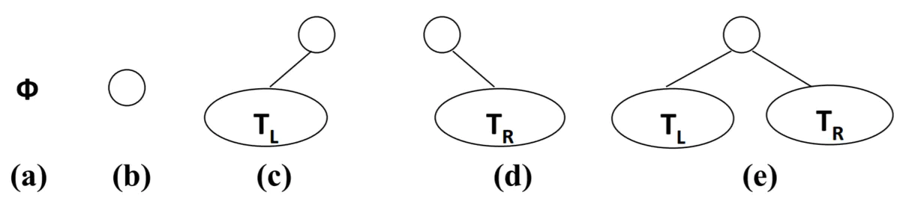
二叉树的特性
- 一个二叉树第 i 层的最大结点数为：2^(i-1),其中i>=1
- 深度为k的二叉树有最大结点总数为： 2^k - 1，其中k>=1
- 对任何非空二叉树 T，若n0表示叶结点的个数、n2是度为2的非叶结点个数，那么两者满足关系n0 = n2 + 1
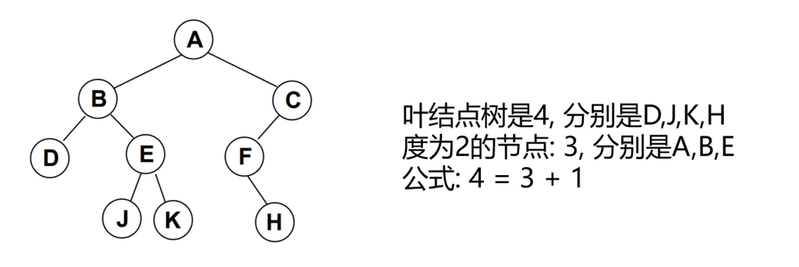
特殊的二叉树
完美二叉树
- 完美二叉树(Perfect Binary Tree) , 也称为满二叉树(Full Binary Tree）
- 在二叉树中, 除了最下一层的叶结点外, 每层节点都有2个子结点, 就构成了满二叉树
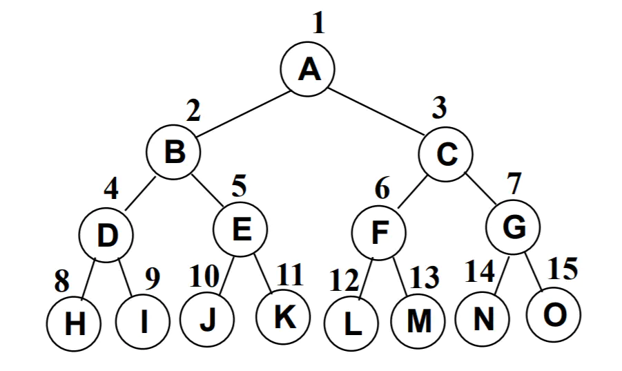
完全二叉树
- 除二叉树最后一层外, 其他各层的节点数都达到最大个数
- 且最后一层从左向右的叶结点连续存在, 只缺右侧若干节点
- 完美二叉树是特殊的完全二叉树

二叉树的存储
- 二叉树的存储常见的方式是数组和链表
使用数组存储
- 完全二叉树: 按从上至下、从左到右顺序存储
- 左孩子节点的坐标为父节点的2倍
- 右孩子节点的坐标为父节点的2倍+1
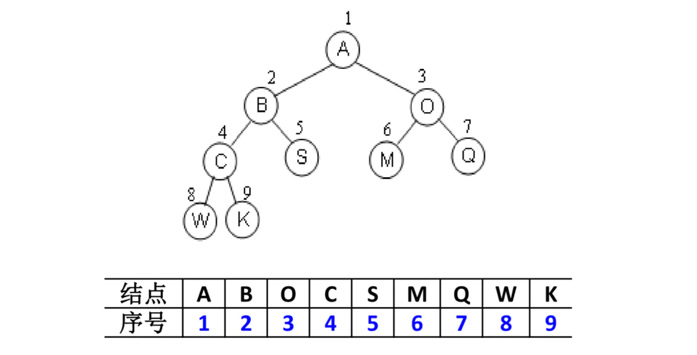
- 非完全二叉树
- 非完全二叉树要转成完全二叉树才可以按照上面的方案存储
- 但是会造成很大的空间浪费
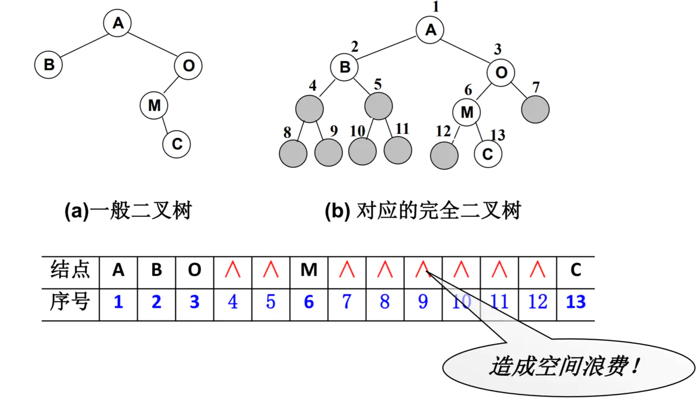
链表存储
- 二叉树最常见的方式还是使用链表存储
- 每个结点封装成一个Node, Node中包含存储的数据, 左结点的引用, 右结点的引用
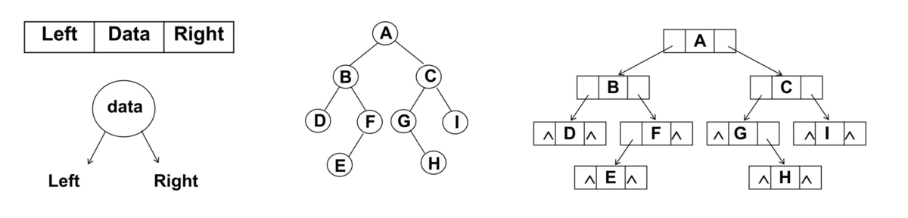